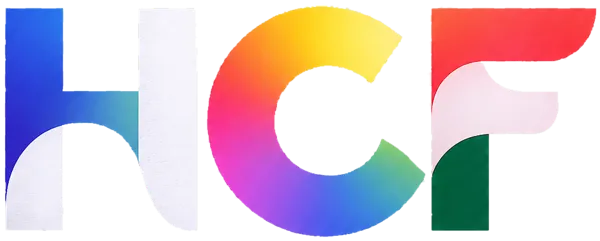
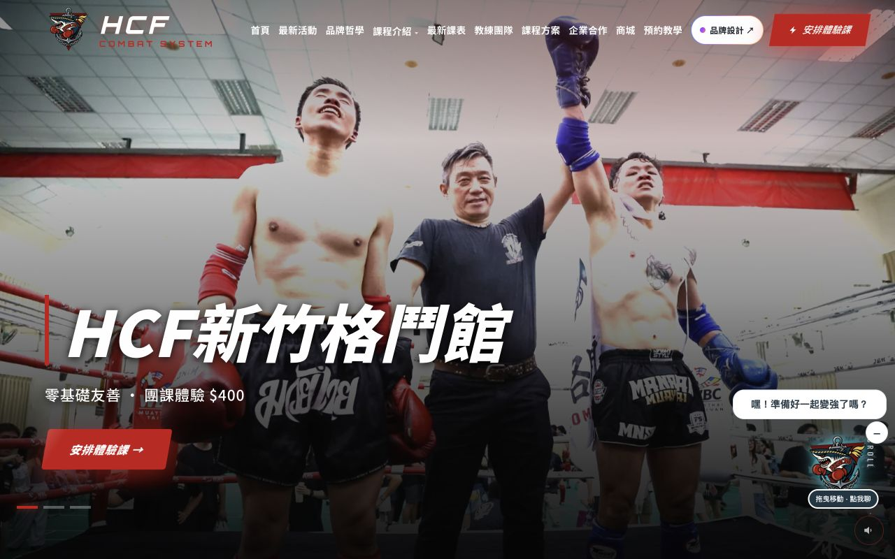
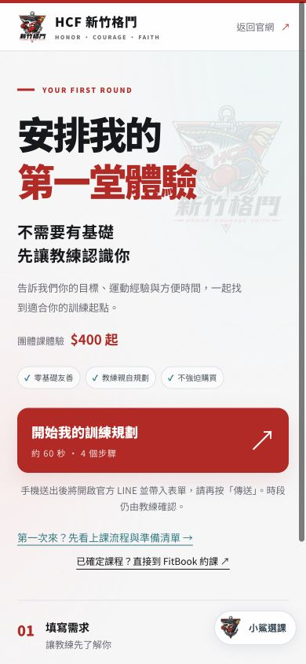

三個問題，找到起點
從目標、經驗與方便時間推薦課程，讓第一次接觸格鬥的人更容易開始。
看課程介紹 →
WEBSITE DESIGN / HCF COMBAT
你正在看的格鬥官網，也是我們的作品。
把品牌個性、課程資訊與預約流程，設計成一條容易走的路。
先從免費品牌健檢，聊聊你的品牌與需求。
以格鬥場館的紅、黑、白建立辨識度，搭配真實教學影像；課程內頁用白色背景與清楚層級承接資訊。

從目標、經驗與方便時間推薦課程，讓第一次接觸格鬥的人更容易開始。
看課程介紹 →四步填寫、摘要修改與 LINE 銜接，清楚區分網站收件和教練確認。
看看預約流程 →保留原版小鯊 LOGO，加入霓虹情緒、拖曳、閒置睡覺與選課引導。

服務範圍、內容準備與時程依專案需求討論。